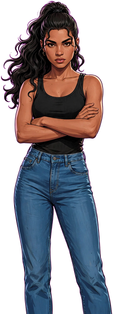
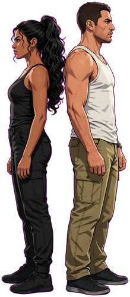
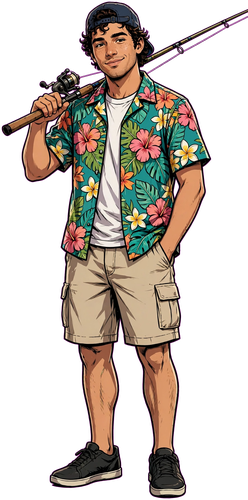

AUDIT — WHAT WE CHECKED
Every number below is computed from this guide's own data. Nothing is borrowed.
55 trophies · 1 platinum, 2 gold, 6 silver, 46 bronze · 28 hidden · 1 possibly missable · 0 online · works fully offline.

TRACKER — Lucia runs the checklist
Tick a trophy off when it pops. Your checklist lives in this browser only — nothing leaves your device.
LEONIDA — WHERE THINGS ARE
One map, fourteen pins. Every location-based trophy is pinned; tap a pin's number on a trophy card to light it up here.
ROADMAP — Jason walks the long road
One playthrough, no online, no glitched trophies. About 200 hours if you follow the stages in order — the 100% checklist is the part that decides whether it is 200 or 300.
NEXT UP — in roadmap order
The trophies to do first, in the order this guide plays them. missable · do first means it can be lost — everything else can wait.
MISSABLE WATCH
COUNTED TROPHIES — trophy target vs 100% checklist target

MISSABLES — Lucia & Jason watch your back
Almost nothing in GTA VI can be missed — the story has no mission replay, but free roam after the story keeps every strand open. This tab shows the one exception, honestly, with both sides of the argument.
⚠ POSITIVE MENTAL ATTITUDE — THE ONLY POSSIBLE MISSABLE
What the sources say, both sides: PowerPyx and KeenGamer flag a Chapter 1 balcony meditation at Jason's house — after the mission Down to Earth, Lucia says she will meditate, and if you follow her to the balcony and accept, the meditation counter goes up by 1. It is not marked as a meditation spot like the other 18, so whether it is required for the trophy is unconfirmed. PlanetGTA6, meanwhile, says no reliable missable list exists yet for this game.
Our advice: do it in Chapter 1. It takes one minute, it costs nothing, and it removes the only risk on the whole list. Keep a manual save from the start of Chapter 1 and another from the end of each chapter — with 15 manual slots plus 1 autosave, there is room.
Everything else is safe: the side-character strands (Andy, Kenton, Billy, Randy, Tyrone, Bret) all stay open after the story, and every collectible and activity trophy can be finished in free roam.
STORY-GATED TROPHIES × CHAPTERS
Safe = pops here or stays available later · Last chance = start it in this chapter (one source warns the window follows story progress) · Never available = the content has not opened yet · Watch = needs confirming.
STORY GATES
COUNTS — the exact targets

SOURCES — Cal checked every claim
Every guide step cites at least one source page this guide actually read on 20 November 2026. Six pages, six sites. If two sources disagreed, the guide shows both sides instead of picking one.
TROPHY × SOURCE MATRIX — which source backs which trophy
A ✓ means at least one step of that trophy's guide cites that source. Every row has at least one ✓; 87 of the 148 steps cite two or more sources.